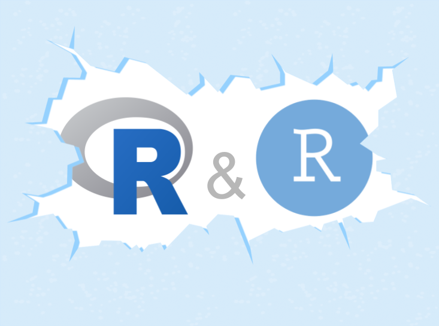

Breaking the Ice with R and RStudio
November 2022
About

This manuscript provides a brief tutorial for getting started with R and RStudio.
Citation
You can cite this work as:
Sanchez, G. (2022) Breaking the Ice with R and RStudio. https://www.gastonsanchez.com/R-ice-breaker
My Series of R Tutorials
This document is part of series of texts that I’ve written about Programming and Data Analysis in R:
- Breaking the Ice with R: Getting Started with R and RStudio
https://www.gastonsanchez.com/R-ice-breaker
- Tidy Hurricanes: Analyzing Tropical Storms with Tidyverse Tools
https://www.gastonsanchez.com/R-tidy-hurricanes
- R Coding Basics: An Introduction to the Basics of Coding in R
https://www.gastonsanchez.com/R-coding-basics
- Rolling Dice: Exploring Simulations in Games of Chance with R
https://www.gastonsanchez.com/R-rolling-dice
- Web Technologies in R: A Short Introduction to Web Technologies in R
https://www.gastonsanchez.com/R-web-technologies
Donation
As a Data Science and Statistics educator, I love to share the work I do. Each month I spend dozens of hours curating learning materials like this resource. If you find any value and usefulness in it, please consider making a one-time donation—via paypal—in any amount (e.g. the amount you would spend inviting me a cup of coffee or any other drink). Your support really matters.

License

This work is licensed under a Creative Commons Attribution-NonCommercial-ShareAlike 4.0 International License.